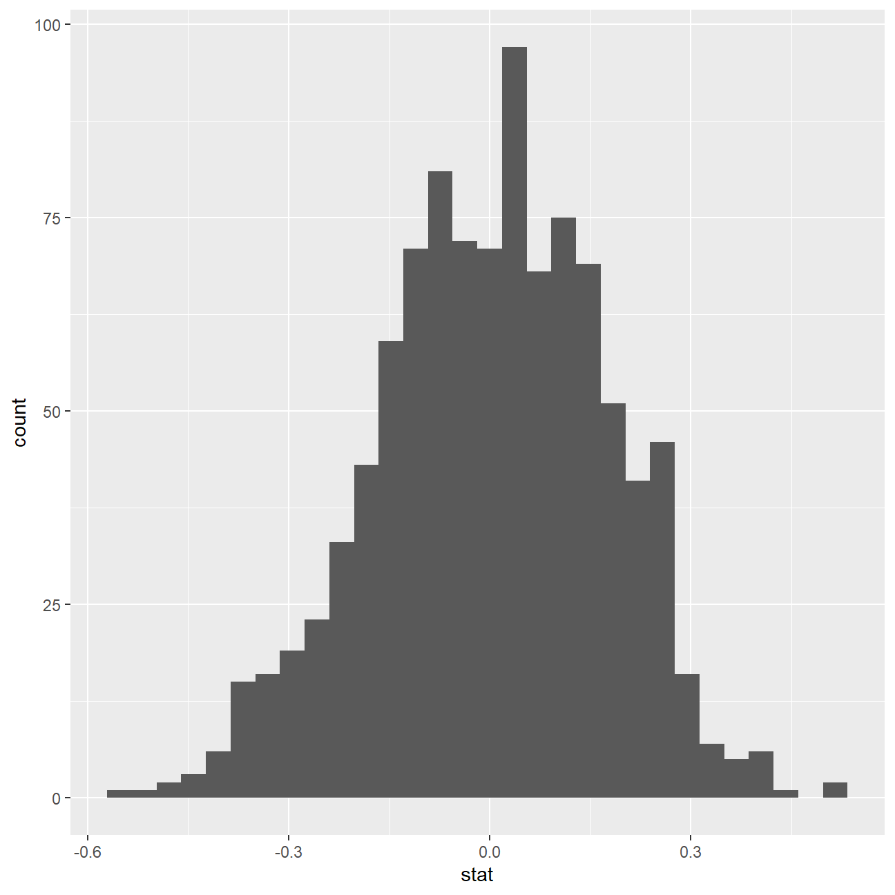
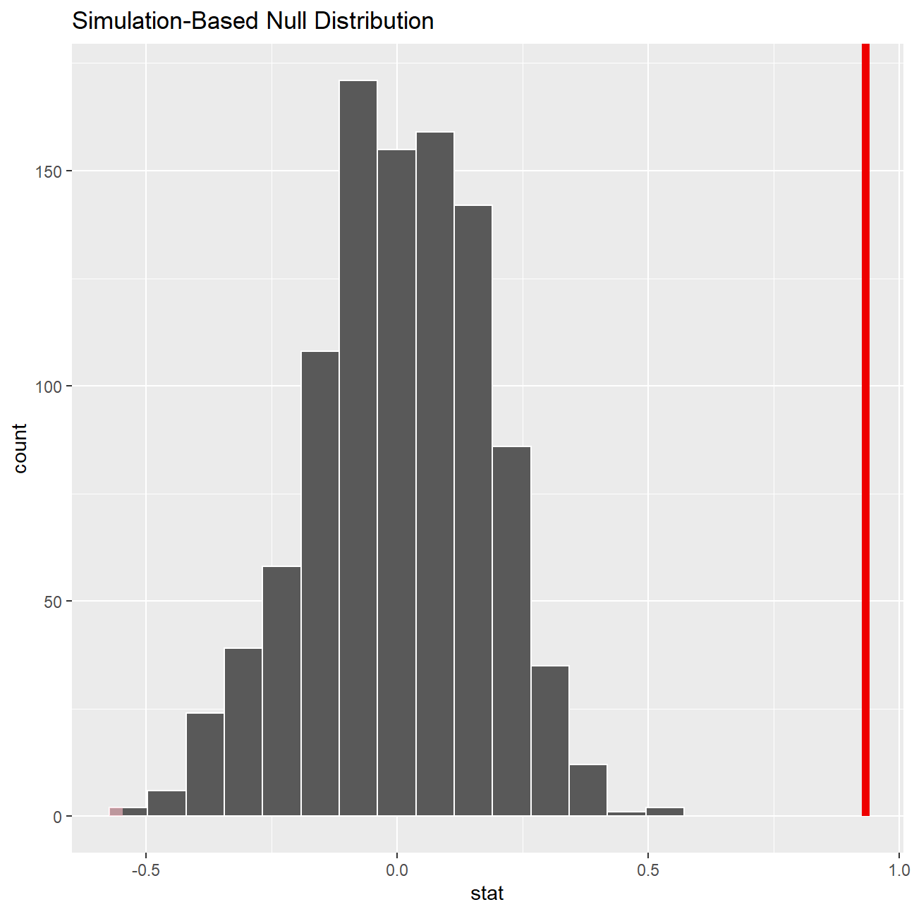

Data Visualisation
Judging from these numbers alone, it does indeed seem that a movie’s director has an impact on the IMDB Rating. But looking at numbers can be a bit daunting, so let’s try to make this a bit more appealing to look at:

This project was done to research whether the IMDB rating for blockbuster movies were influenced by the director. Before looking at any kind of data, a null hypothesis and alternative hypothesis were set up as follows:
There is no difference in the mean IMDB-rating for movies produced by Steven Spielberg or Tim Burton.
There is a significant difference between these mean IMDB-ratings.
We will look at a subset sample of movies, taken from the Kaggle IMDB 5000 movie dataset
movies <- vroom::vroom(here::here("data", "movies.csv"))
glimpse(movies)## Rows: 2,961
## Columns: 11
## $ title <chr> "Avatar", "Titanic", "Jurassic World", "The Ave...
## $ genre <chr> "Action", "Drama", "Action", "Action", "Action"...
## $ director <chr> "James Cameron", "James Cameron", "Colin Trevor...
## $ year <dbl> 2009, 1997, 2015, 2012, 2008, 1999, 1977, 2015,...
## $ duration <dbl> 178, 194, 124, 173, 152, 136, 125, 141, 164, 93...
## $ gross <dbl> 7.61e+08, 6.59e+08, 6.52e+08, 6.23e+08, 5.33e+0...
## $ budget <dbl> 2.37e+08, 2.00e+08, 1.50e+08, 2.20e+08, 1.85e+0...
## $ cast_facebook_likes <dbl> 4834, 45223, 8458, 87697, 57802, 37723, 13485, ...
## $ votes <dbl> 886204, 793059, 418214, 995415, 1676169, 534658...
## $ reviews <dbl> 3777, 2843, 1934, 2425, 5312, 3917, 1752, 1752,...
## $ rating <dbl> 7.9, 7.7, 7.0, 8.1, 9.0, 6.5, 8.7, 7.5, 8.5, 7....Besides the obvious variables of title, genre, director, year, and duration, the rest of the variables are as follows:
gross : The gross earnings in the US box office, not adjusted for inflationbudget: The movie’s budgetcast_facebook_likes: the number of facebook likes cast memebrs receivedvotes: the number of people who voted for (or rated) the movie in IMDBreviews: the number of reviews for that movierating: IMDB average ratingAre there any missing values (NAs)? Are all entries distinct or are there duplicate entries?
No missing but many duplicates across categories. There are 2961 rows and only 2907 unique movie titles, so it can be inferred that some movies show more than one time with different genres.
Then, I manipulate the data set so that only Steven Spielburg and Tim Burton are evaluated.
movies_v1 <- movies %>% filter(director == "Steven Spielberg" | director == "Tim Burton") %>% select(director | rating)
movies_v2 <- movies_v1 %>%
group_by(director) %>%
summarise(mean_rating = mean(rating, na.rm=TRUE),
sd_rating = sd(rating, na.rm = TRUE),
count = n(),
se_rating = sd_rating/sqrt(count),
t_critical = qt(0.975, count-1),
margin_of_error = t_critical * se_rating,
lower = mean_rating - t_critical * se_rating,
upper = mean_rating + t_critical * se_rating
)Steven Spielburg has an average IMDB rating of 7.57 while Tim Burton has an average rating of just 6.93. Furthermore, Steven has made more movies with a smaller spread across ratings, which is seen by his standard error of just 0.148. On the other hand, Tim Burton has made fewer movies with a larger discrepancy in ratings; causing him to have an standard error of 0.193.
Judging from these numbers alone, it does indeed seem that a movie’s director has an impact on the IMDB Rating. But looking at numbers can be a bit daunting, so let’s try to make this a bit more appealing to look at:
movies <- movies %>%
mutate(spielberg_burton = movies$director %in% c("Steven Spielberg", "Tim Burton"))
movies %>% filter(!is.na(spielberg_burton)) %>%
group_by(spielberg_burton) %>%
summarise(count = n()) %>%
mutate(prop= count/sum(count))## # A tibble: 2 x 3
## spielberg_burton count prop
## <lgl> <int> <dbl>
## 1 FALSE 2922 0.987
## 2 TRUE 39 0.0132t.test(rating ~ spielberg_burton, data = movies)##
## Welch Two Sample t-test
##
## data: rating by spielberg_burton
## t = -7, df = 40, p-value = 5e-09
## alternative hypothesis: true difference in means is not equal to 0
## 95 percent confidence interval:
## -1.188 -0.679
## sample estimates:
## mean in group FALSE mean in group TRUE
## 6.38 7.31obs_diff <- movies %>%
specify(rating ~ spielberg_burton) %>%
calculate(stat = "diff in means", order = c(TRUE, FALSE))
obs_diff## # A tibble: 1 x 1
## stat
## <dbl>
## 1 0.933null_dist <- movies %>%
specify(rating ~ spielberg_burton) %>%
hypothesize(null = "independence") %>%
generate(reps = 1000, type = "permute") %>%
calculate(stat = "diff in means", order = c(TRUE, FALSE))
null_dist## # A tibble: 1,000 x 2
## replicate stat
## <int> <dbl>
## 1 1 -0.210
## 2 2 -0.0878
## 3 3 -0.218
## 4 4 -0.358
## 5 5 -0.140
## 6 6 -0.0592
## 7 7 0.0473
## 8 8 -0.0255
## 9 9 0.0733
## 10 10 -0.109
## # ... with 990 more rowsggplot(data = null_dist, aes(x = stat)) +
geom_histogram()
null_dist %>% visualize() +
shade_p_value(obs_stat = obs_diff, direction = "two-sided")
null_dist %>%
get_p_value(obs_stat = obs_diff, direction = "two_sided")## # A tibble: 1 x 1
## p_value
## <dbl>
## 1 0Using Michael Bay and James Cameron this becomes a lot more apparent - here the gap between the two confidence intervals is quite large and so tells us that a movie’s director most likely plays a role in its IMDB rating.